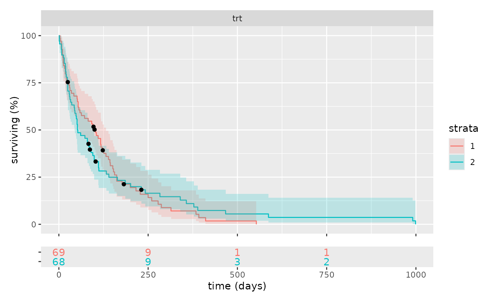

Faceted Kaplan-Meier plot
Arguments
- df
the data
- coxmodel
the cox model output of survival::coxph from the data
- facet
the division to highlight in the KM strata. Defaults to first term on the lhs of the cox model formula
- ...
Named arguments passed on to
survival::survfitformulaeither a formula or a previously fitted model
...other arguments to the specific method
- maxtime
the longest x value to plot (optional)
- ylab
the y axis label
- xlab
the x axis label
- facetlab
a label to add as a facet title
- ylim
the range to show on the KM plot
- n_breaks
number of x axis breaks to display this also determines the timing and number of "at risk" counts to display.
- heights
the relative height between the KM plot and the "at risk" table
- invert
reverse survival statistics to count number of affected
- show_label
show the label on the at risk table ( which is somewhat redundant as items are coloured)
- show_legend
show the legend for the strata. (This is sometimes redundant if the at risk table is labelled)
Examples
cox = survival::coxph(survival::Surv(time, status) ~ trt + celltype + karno +
diagtime + age + prior , data = survival::veteran)
km_plot(survival::veteran, cox)

km_plot(survival::veteran, cox, facet = 1)
km_plot(survival::veteran, cox, "celltype", show_label=TRUE) &
ggplot2::theme(legend.position="bottom")
km_plot(survival::veteran, cox, "trt", show_label=TRUE) &
ggplot2::theme(legend.position="bottom")